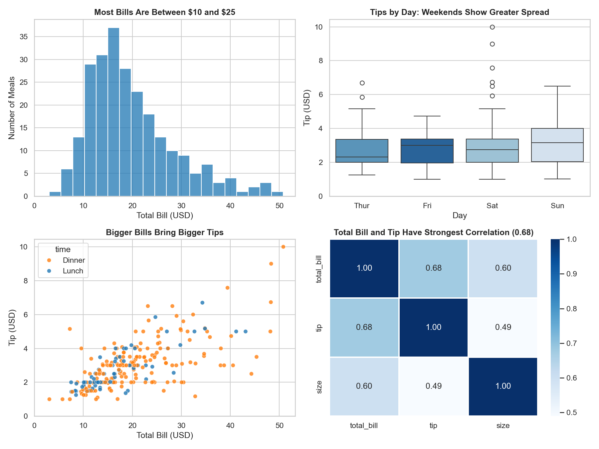
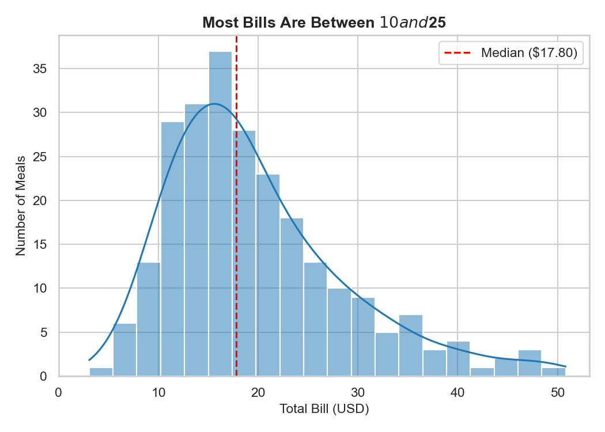
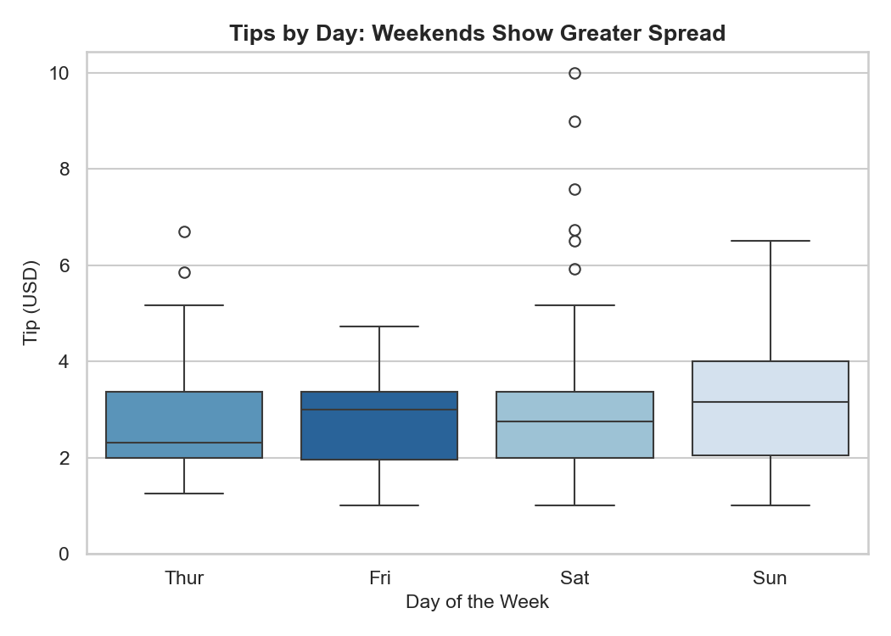
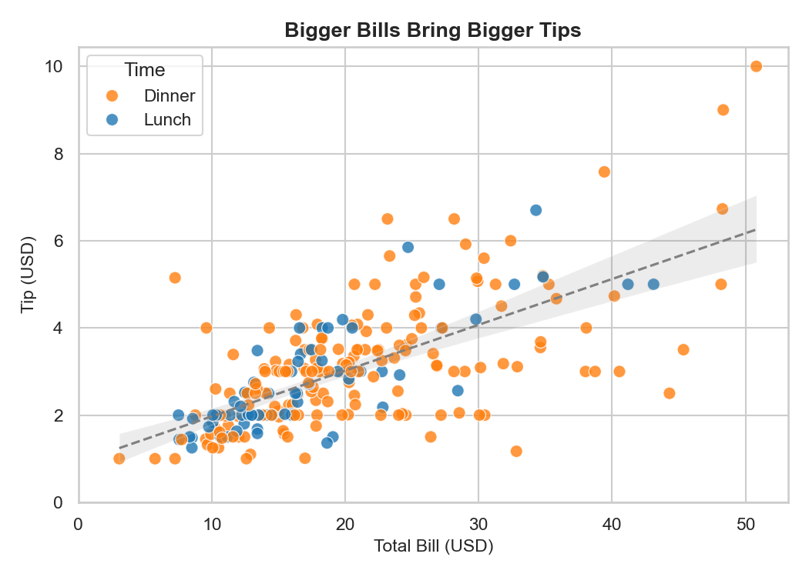
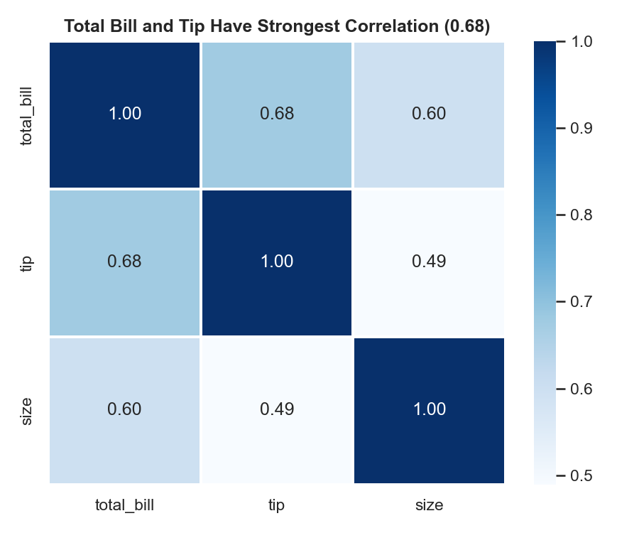
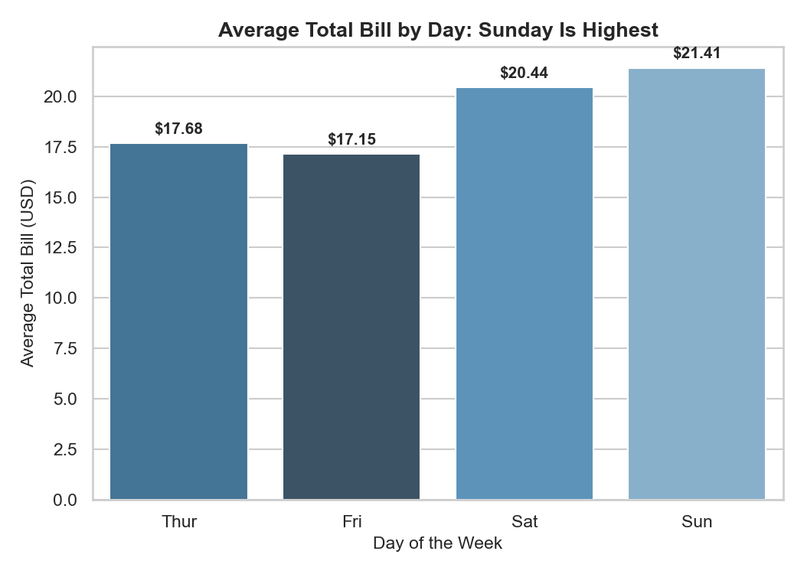

Exploratory analysis of customer dining patterns, tipping behavior, and spend metrics on the Tips Dataset.

Key Finding: Customer meal checks peak between $10 and $25 with a median of $17.80. Tipping follows a consistent upward trajectory with bill size, while weekends introduce significantly greater tip variance and higher outlier gratuities up to $10.00.
| # | Question | Chart Type | One-Line Takeaway |
|---|---|---|---|
| 1 | How are bills distributed? | Histogram + KDE | Most bills are between $10 and $25 (median $17.80), with a right skew due to infrequent large parties. |
| 2 | Do tips differ by day? | Box Plot | Median tips are consistent (~$2.75–$3.00), but weekends show higher variance and outlier tips up to $10. |
| 3 | Does a bigger bill mean a bigger tip? | Scatter Plot | Bigger bills consistently bring bigger tips across both lunch and dinner sittings. |
| 4 | Which numbers move together? | Correlation Heatmap | Total bill and tip share the strongest correlation (r = 0.68), followed by party size and bill (r = 0.60). |
| 5 | Which day has the highest average bill? | Bar Chart (Zero baseline) | Sunday has the highest average bill ($21.41), followed by Saturday ($20.44), while Thursday and Friday are lower. |




